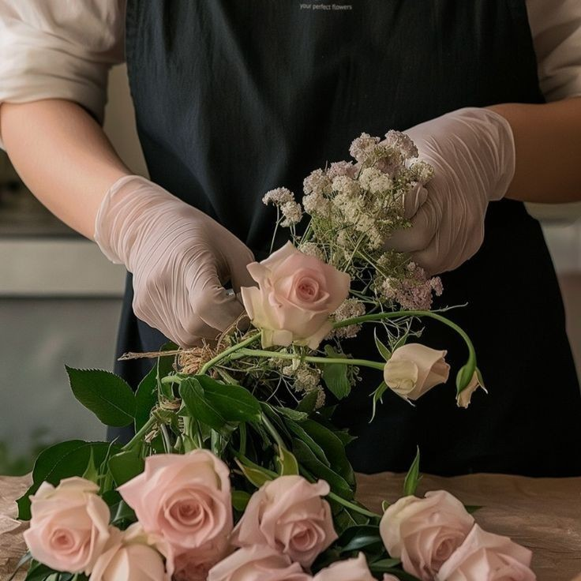
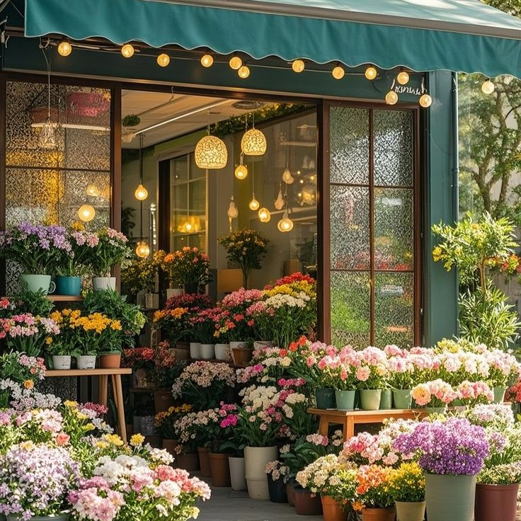
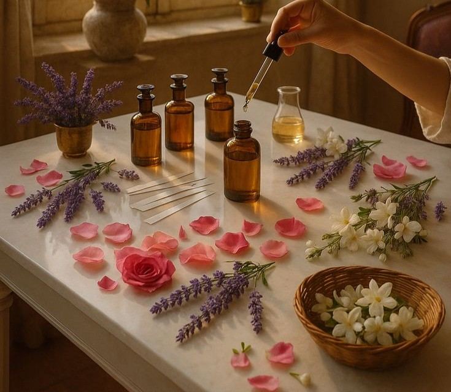
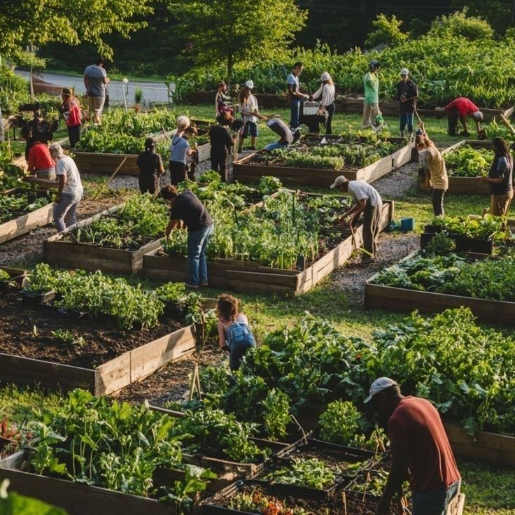

L’entreprise Florae a été fondée en 1985 à Aix-en-Provence, par Florence Davis, passionnée de botanique et d’horticulture. Inspirée par la richesse florale de la région Provence-Alpes-Côte d’Azur, elle décide de créer une pépinière spécialisée dans les fleurs méditerranéennes rares et les plantes aromatiques locales.
Les premières années sont consacrées à la culture de lavandes, romarins et coquelicots destinés aux marchés locaux et aux fleuristes de la région.

Grâce au succès des marchés provençaux et à la qualité reconnue de ses spécimens, Florae ouvre sa première boutique en centre-ville d’Aix-en-Provence en 1996. La société commence également à exporter ses fleurs coupées et plantes en pots vers d’autres villes du sud de la France, notamment Marseille et Nice. Durant cette période, elle développe un programme de partenariats avec des hôtels et restaurants de renom pour fournir des compositions florales sur mesure.

Dès 2006, Florae s’engage dans la recherche de nouvelles variétés florales résistantes à la chaleur méditerranéenne et à la sécheresse. Elle lance également une ligne de bouquets haut de gamme et de produits dérivés comme des sachets de fleurs séchées, huiles essentielles et décorations florales saisonnières.
Cette période marque également le développement d’ateliers pédagogiques pour enfants et adultes afin de promouvoir l’art floral et le jardinage durable.
